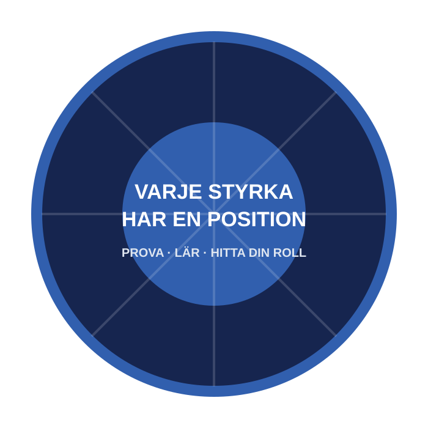

U18-träningsläger
Tre dagars förberedelser på Kungsängens IP inför Dukes Tourney.
Amerikansk fotboll i Dalarna
Ett lag för ungdomar, vuxna, nybörjare och återvändande spelare i Falun, Borlänge och hela Dalarna.
Ingen erfarenhet krävs · Nybörjare välkomna · Fråga om utrustning inför din första träning

Rebels just nu
Dalecarlia Rebels bygger en nationell U18-säsong tillsammans med Upplands-Bro Broncos.
Tre dagars förberedelser på Kungsängens IP inför Dukes Tourney.
Sveriges största turnering i amerikansk fotboll för ungdomar på Lillegårdens IP i Skövde.
Det gemensamma laget inleder serien på bortaplan mot Örebro Black Knights.
Tiderna följer Upplands-Bro Broncos officiella U18-kalender och kan ändras. Se den aktuella lagkalendern ↗
Aldrig spelat förut?
Amerikansk fotboll är en av få sporter där olika kroppstyper, förmågor och personligheter behövs. Snabbhet har en position. Styrka har en position. Strategi har en position. Engagemang har en position.
Se hur din första träning går till →
Hitta din roll
Utforska möjliga positioner utifrån dina styrkor och prova sedan olika roller tillsammans med tränarna. Positionsguiden är en introduktion – inte ett test.
Öppna positionsguidenKlubbnyheter
Klubbnyheter
Falu Energi & Vatten valde Dalecarlia Rebels som en av de lokala föreningar de stödjer under 2026.
Läs det officiella beskedet ↗Ungdomsfotboll
Klubbarna samlar spelare och tränarerfarenhet inför den nationella U18-säsongen 2026.
Läs laguppdateringen ↗Rekrytering
Personer i alla åldrar fick prova amerikansk fotboll på Kvarnsvedens IP utan krav på tidigare erfarenhet.
Följ kommande Rookie Days ↗Rebels historia
Från tidigare klubbar och bildandet av Rebels 2012 till dagens förnyade ungdomssatsning finns klubben för att hålla amerikansk fotboll levande i regionen.
Läs historien”Nästa del av historien är ännu inte skriven.”Bli en del av den →
Partners
Stöd ungdomsutrustning, säkra anläggningar, tränare, resor och möjligheter i hela Dalarna.